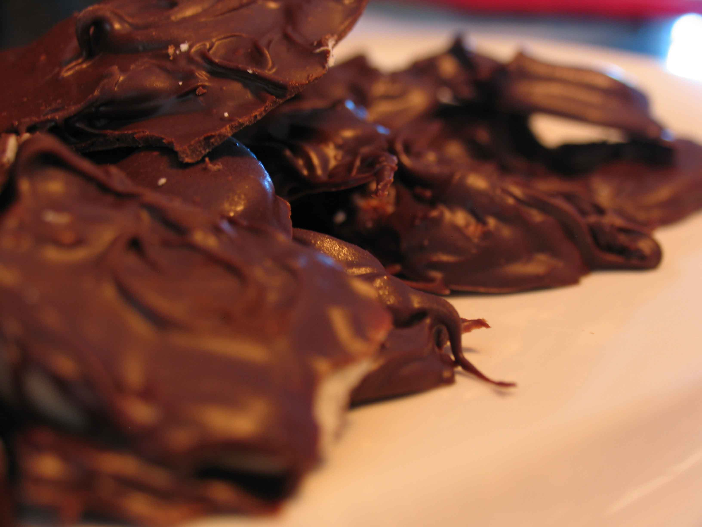
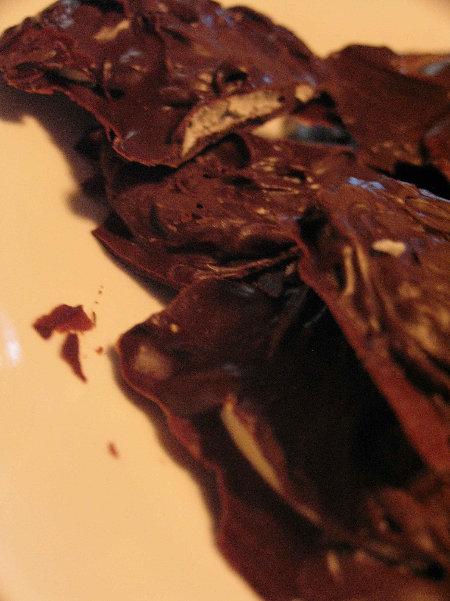

Going to delete a few sections on 14 Mar 2015..
Please see the sheet for some information
To-Read Reading list (inspired by two literature class assignments):
Finished To-Read Reading list (inspired by two literature class assignments):
Feb
(14 02 to 22 02)
229 230
Difficulties with the camera...come back for more on the Sunday the 8th of MarchTuesday, the 10th of March! Since I am delaying the release, I will toss in some bonus content: Thin Mint experiment pictures...Content Release on the 8th of March: Home-made Mocha (maybe), Caramel Experiment (certain), and Thin Mints (certain).
Peppermint patties...Certainly palatable, but not exactly delectable. I need to thin the chocolate. Experimenting with caramels at the moment
 Unedible results. Caramels turned out not as expected(there seems to be a layer of oil...) Oh well. At least the very experience of seeing sugar caramelizing (directly through my eyes rather than through the lenses of a camera+editing to a computer then to my eyes) was quite exciting. Also this is my first time using a candy thermometer :P As for other Thin Mints, I let the dough sit in the refridgerator too long (I made the dough almost two weeks ago but never found the time to bake it)...The dough is too dry (a test bake yielded extremely crunchy results). Maybe I will have better luck with the mocha tomorrow.